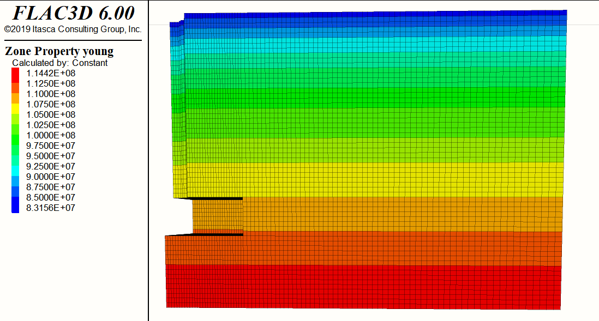

1 KAIST Model
1.1 Initial Configuration

import itasca as it
import numpy as np
np.set_printoptions(threshold=20)
it.command("python-reset-state false")
from itasca import zonearray as za
from itasca import gridpointarray as gpa
########################################
############ PARAMETERS ################
########################################
# Mesh Details
_radial = 20
_perimeter = _radial
_axial = 2*_radial
_outer = 2*_radial
# Physical Constants
_gravity = 9.80665
_K = 0.318
# Dimensions
_D_shaft = 1
_H_shaft = 7.45
_T_plate = 1.5
_B_footing = 3.25
_D_footing = _H_shaft + _T_plate
_B_soil = _B_footing*5
_D_soil = _D_footing+3
# Concrete Properties
_bulk = 13.9e9
_shear = 10.4e9
_density_concrete = 2400
# Soil Properties
_E_o = 80e6
_const = 1e7
_poisson = 0.25
_density_soil = 1530
_friction = 35
_cohesion = 100
# Interface Properties
_stiff_norm = 1e10
_stiff_shear = 1e101.2 Zones

########################################
############### ZONES ##################
########################################
print(" ((((((((((((((((======== NEW RUN ========)))))))))))))))")
command_zone = """
model new
z crea r-t p 0 (0,0,0) ...
p 1 ({B_soil},0,0) ...
p 2 (0,{D_soil},0) ...
p 3 (0,0,{B_soil}) ...
p 4 ({B_soil},{D_soil},0) ...
p 5 (0,{D_soil},{B_soil}) ...
p 6 ({B_soil},0,{B_soil}) ...
p 7 ({B_soil},{D_soil},{B_soil}) ...
p 8 ({B_footing},0,0) ...
p 9 (0,0,{B_footing}) ...
p 10 ({B_footing},{D_soil},0) ...
p 11 (0,{D_soil},{B_footing}) ...
p 12 ({B_footing},0,{B_footing}) ...
p 13 ({B_footing},{D_soil},{B_footing}) ...
size {radial} {axial} {perimeter} {outer} ...
rat 1 1 1 1.01 ...
fill
"""
command = command_zone.format(
B_footing = _B_footing,
B_soil = _B_soil,
D_soil = _D_soil,
radial=_radial,
axial = _axial,
perimeter = _perimeter,
outer = _outer)
it.command(command)
print("radial mesh number is ", _radial)
1.3 Constitutive Model
It is easy to loop over sets of model objects (i.e., zones, gridpoints, structural element nodes, etc.) using the loop foreach construct. In this case, a container of objects must be given by a FISH intrinsic such as zone.list. A practical use of the loop foreach construct is to install a nonlinear initial distribution of elastic moduli in a FLAC3D grid. Suppose that the Young’s modulus at a site is given by this equation:
\[ E = E_0 + c \sqrt{z} \] where \(z\) is the depth below surface, and \(c\) and \(E_0\) are constants. We write a FISH function to install appropriate values of bulk and shear modulus in the grid:
########################################
######## CONSTITUTIVE MODEL ############
########################################
it.command("""
zone cmodel assign elastic range group "Radial Tunnel1"
fish define fname(E_o,const)
loop foreach pnt zone.list
z_depth = zone.pos.y(pnt)
E = E_o+const*math.sqrt(z_depth)
zone.prop(pnt,'young')=E
end_loop
end
@fname({E_o_},{const_})
zone property poisson {poisson_} density {density_soil}
plot item create zone contour property name 'young'
plot item create zone contour property name 'density'
""".format(E_o_=_E_o,const_=_const,poisson_=_poisson,density_soil=_density_soil))
# GROUP #
p = za.pos()
x,y,z = p.T
print(it.zone.count(), "zones in whole model")
shaft = reduce(np.logical_and, (np.sqrt(x**2+z**2)<_D_shaft, y<_H_shaft))
za.set_group(shaft, "shaft")
print(za.in_group("shaft").sum(), "zones in shaft group.")
plate = reduce(np.logical_and, (x<_B_footing,z<_B_footing, y>_H_shaft,y<_D_footing))
za.set_group(plate, "plate")
print(za.in_group("plate").sum(), "zones in plate group.")
it.command("""
zone cmodel assign elastic range group 'shaft'
zone cmodel assign elastic range group 'plate'
zone property bulk {bulk_} shear {shear_} density {density_} range group 'shaft'
zone property bulk {bulk_} shear {shear_} density {density_} range group 'plate'
""".format(bulk_=_bulk,shear_=_shear,density_=_density_concrete))

1.3.1 Elastic (Isotropic) model
1.3.1.1 Hooke’s Law
\[ \Delta \sigma_{ij} = 2 G \Delta \epsilon_{ij} + \alpha_2 \Delta \epsilon_{kk} \delta_{ij}\] , where \(\alpha_2\) is material constant related to the bulk modulus \(K\), and shear modulus \(G\) as
\[ \alpha_2 = K - \frac{2}{3} G\] , and new stress values are obtained from the relation
\[ \sigma_{ij}^{N} = \sigma_{ij} + \Delta \sigma_{ij}\] - Note that bulk modulus \(K\), and shear modulus \(G\), are related to Young’s modulus \(E\) and Poisson’s ratio \(\nu\) by the following equations:
\[ K = \frac{E}{3(1-2 \nu)}\] \[ G = \frac{E}{2(1+ \nu)}\] or \[ E = \frac{9 K G}{3K + G}\]
\[ \nu = \frac{3 K - 2 G}{2(3 K + G)}\] #### Strain-softening Model
Strain softening Model is also available, but not implemented:

#it.command("""
#zone cmodel assign strain-softening range group "Radial Tunnel1"
#zone property density 2500 bulk 2e8 shear 1e8 range group "Radial Tunnel1"
#zone property cohesion 2e6 friction 45 tension 2e5 dilation 10 range group "Radial Tunnel1"
#zone property table-friction 'fri' table-cohesion 'coh' table-dilation 'dil' range group "Radial Tunnel1"
#table 'fri' add (0, 45) (.05, 42) (.1, 40) (1, 40)
#table 'coh' add (0,2e6) (.05,1e6) (.1,5e5) (1,5e5)
#table 'dil' add (0, 10) (.05, 3) (.1, 0)
#""")The strain-softening/hardening model allows representation of nonlinear material softening and hardening behavior based on prescribed variations of the Mohr-Coulomb model properties (i.e., cohesion, friction, dilation and tensile strength) as functions of the deviatoric plastic strain.
1.3.1.2 Plastic-Strain Increments
The plastic-strain increments involved in the preceding formula may be derived from the definition \(\Delta \epsilon_{i}^{p} = \lambda \frac{\partial g}{\partial \sigma_{i}}\) of the flow rule. It has the form:
\[ \Delta \epsilon_{1}^{ps} = \lambda^{s}\] \[ \Delta \epsilon_{3}^{ps} = - \lambda^{s} N_{\psi}\]
\[ \Delta \epsilon_{3}^{pt} = \lambda^{t}\] After determination of the new stresses for the step, the hardening parameters for the zone are updated following the procedure described above. If appropriate, these parameters are then used to determine new values for the zone cohesion, friction, dilation, and tensile strength.
1.3.1.3 strain-softening model properties
- bulk modulus, \(K\)
- cohesion, \(c\)
- dilation, \(\psi\)
- friction, \(\phi\)
- poisson, \(\nu\)
- shear, \(G\)
- tension, \(\sigma^{t}\)
- young, \(E\)
- strain-shear-plastic, accumulated plastic shear strain
- strain-tension-plastic, accumulated plastic tensile strain
- table-cohesion, dilation, friction, tension
Note tension cut-off is \(\sigma^{t} = min(\sigma^{t}, \frac{c}{tan\phi})\)
1.4 Interface
########################################
############# INTERFACE ################
########################################
it.command("""
zone interface 'interface 1' create by-face separate range group 'plate' group 'Radial Tunnel1'
zone interface 'interface 1' node property stiffness-normal {stiff_norm_} stiffness-shear {stiff_shear_} friction 35 cohesion 100
zone interface 'interface 2' create by-face separate range group 'shaft' group 'Radial Tunnel1'
zone interface 'interface 2' node property stiffness-normal {stiff_norm_} stiffness-shear {stiff_shear_} friction 35 cohesion 100
""".format(stiff_norm_=_stiff_norm, stiff_shear_=_stiff_shear))
print(" ======== PASSED INTERFACE ========")During each timestep, the absolute normal penetration and the relative shear velocity are calculated for each interface node and its contacting target face. Both of these values are then used by the interface constitutive model to calculate a normal force and a shear-force vector. The constitutive model is defined by a linear Coulomb shear-strength criterion that limits the shear force acting at an interface node, normal and shear stiffnesses, tensile and shear bond strengths, and a dilation angle that causes an increase in effective normal force on the target face after the shear-strength limit is reached. By default, pore pressure is used in the interface effective stress calculation. This option can be activated/deactivated using the command zone interface effective command by setting effective = on/off. Figure 2 illustrates the components of the constitutive model acting at interface node (P):

The normal and shear forces that describe the elastic interface response are determined at calculation time \((t + \Delta t)\) using the relations:
\[ F_n^{(t + \Delta t)} = k_n u_n A + \sigma_n A \] \[ F_{si}^{(t + \Delta t)} = F_{si}^{(t)} + k_s \Delta u_{si}^{(t + 0.5 \Delta t)} A + \sigma_{si} A\]
The inelastic interface logic works in the following way:
Bonded interface — The interface remains elastic if stresses remain below the bond strengths; there is a shear bond strength, as well as a tensile bond strength. The normal bond strength is set using the tension interface property keyword. The command zone interface node property shear-bond-ratio = sbr sets the shear bond strength to sbr times the normal bond strength. The default value of property shear-bond-ratio (if not given) is 100.0. The bond breaks if either the shear stress exceeds the shear strength, or the tensile effective normal stress exceeds the normal strength. Note that giving property shear-bond-ratio alone does not cause a bond to be established—the tensile bond strength must also be set.
Slip while bonded — An intact bond, by default, prevents all yield behavior (slip and separation). There is an optional property switch (bonded-slip) that causes only separation to be prevented if the bond is intact (but allows shear yield, under the control of the friction and cohesion parameters, using (F_n) as the normal force). The command to allow/disallow slip for a bonded interface segment is zone interface node and by setting bonded-slip on or off.
The default state of bonded-slip (if not given) is off.
- Coulomb sliding — A bond is either intact or broken. If it is
broken, then the behavior of the interface segment is determined by
the friction and cohesion (and of course the stiffnesses). This is
the default behavior, if bond strengths are not set (zero). A broken
bond segment cannot take effective tension (which may occur under
compressive normal force, if the pore pressure is greater). The
shear force is zero (for a nonbonded segment) if the effective
normal force is tensile or zero.
The Coulomb shear-strength criterion limits the shear force by the relation:
\[ F_{smax} = c A + tan\phi (F_n - pA)\] During sliding, shear displacement may cause an increase in the effective normal stress on the joint, according to the relation:
\[\sigma_n := \sigma_n + \frac{|F_s|_o - F_{smax}}{A k_s} tan\psi k_n\]
On printout (see the zone interface node list command ) the value of
tension denotes whether a bond is intact or broken (or not set) —
nonzero or zero, respectively.
The normal and shear forces calculated at the interface nodes are
distributed in equal and opposite directions to both the target face and
the face to which the interface node is connected (the host face).
Weighting functions are used to distribute the forces to the gridpoints
on each face. The interface stiffnesses are added to the accumulated
stiffnesses at gridpoints on both sides of the interface in order to
maintain numerical stability.
Interface contacts are detected only at interface nodes, and contact forces are transferred only at interface nodes. The stress state associated with a node is assumed to be uniformly distributed over the entire representative area of the node. Interface properties are associated with each node; properties may vary from node to node.
1.5 Boundary Conditions
########################################
######## BOUNDARY CONDITIONS ###########
########################################
it.command("""
zone face skin
zone face apply velocity-normal 0 ...
range group 'West7' or 'West6' or 'Bottom7' or 'Bottom6' or 'East6' or 'Top6'
zone face apply velocity (0,0,0) range group 'North3'
""")1.6 Initial Equilibrium
########################################
############# INITILIZE ################
########################################
it.command("""
model gravity 0 {gravity_} 0
zone initialize-stress ratio {K_}
zone interface 'interface 1' node initialize-stresses
zone interface 'interface 2' node initialize-stresses
""".format(gravity_=_gravity, K_ = _K))
it.command("""
zone ratio local
model solve ratio 1e-4
model save 'initial'
""")
print(" ======== PASSED INITIAL EQUILIBRIUM ========")1.7 Vertical Loading
########################################
########## VERTICAL LOADING ############
########################################
#top = reduce(np.logical_and, (np.sqrt(x**2+z**2)<_D_shaft, y<=np.amin(y)))
#za.set_group(top, "top")
#print(za.in_group("top").sum(), "zones in top group.")
it.command("""
zone initialize state 0
zone gridpoint initialize displacement (0,0,0)
zone gridpoint initialize velocity (0,0,0)
table 'ramp' add ([global.step],0) ([global.step+5000],1e-6) ...
([global.step+10000],1e-6) ; Increase velocity applied to pile
; over 5,000 steps
zone face apply velocity-normal 1e-5 range group 'North1' or 'South2'
; Set up histories for monitoring model behavior
history interval 10
zone history name 'disp' displacement-y position (3,7,3)
; find gridpoints at pile cap, store in map called cap
;fish define find_cap
; global cap = map
; loop foreach local gp gp.list
; if gp.isgroup(gp,'top') then
; cap(gp.id(gp)) = gp
; endif
; endloop
;end
;fish history name 'cap' @find_cap
;
;fish define vert_load
; local yftot = 0.0
; loop foreach gp cap
; yftot = yftot + gp.force.unbal.y(gp)
; end_loop
; vert_load = yftot / (0.25*{D_shaft_}*{D_shaft_}*math.pi)
;end
;
;fish history name 'load' @vert_load
;zone mechanical damping combined
model largestrain true
model step 10000
model save 'vertical-loading'
""")
print(" ======== PASSED VERTICAL LOADING ========")1.8 Plot
########################################
################ PLOT ##################
########################################
it.command("""
plot create
plot item create zone label group
plot create
plot item create zone contour property name 'young'
plot create
plot item create zone label density
plot create
plot item create zone active on ...
contour Displacement
""")
print(" ======== PASSED PLOT ========")